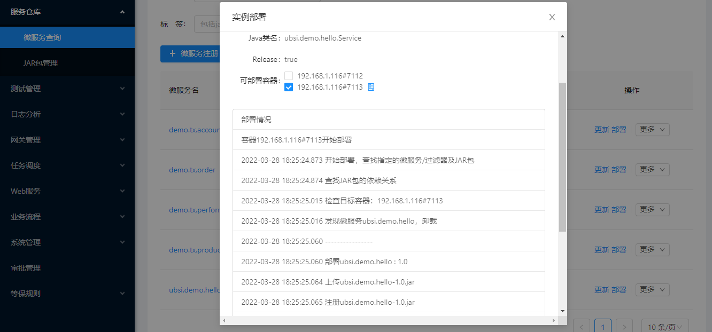

服务部署
微服务测试完成后，需要部署到实际的容器中运行（在"单元测试"时使用的手工创建rewin.ubsi.module.json文件的方式仅在调试时使用），部署微服务可以通过UBSI的部署工具来完成。
首先需要完成部署前的准备工作：
启动一个独立的UBSI Container微服务容器
java -jar rewin.ubsi.core-2.3.0-jar-with-dependencies.jar可以在 https://ubsi-home.github.io/download 下载 rewin.ubsi.core-2.3.0-jar-with-dependencies.jar
容器启动后默认的监听地址为本机（localhost）的7112端口
将Java项目build成JAR包并deploy到maven私有仓库
mvn clean deploy
然后再来看一下UBSI的服务部署工具。UBSI提供了两种部署方式：命令行、服务仓库
命令行部署工具
下载ubsi-repo命令行部署工具
下载地址：https://ubsi-home.github.io/download/rewin.service.ubsi.repo-2.3.0-jar-with-dependencies.jar
手工创建一个部署文件，比如：deploy.demo.hello.json，内容如下：
{ "maven_url": "http://maven.aliyun.com/nexus/content/groups/public/", "maven_repo": [ { "url" : "https://maven.pkg.github.com/ubsi-home/release/", "user": "{your-github-account}", "password": "{your-github-Personal_Access_Token}" }, { "url" : "{your-maven-repository-url}", "user": "{your-maven-account}", "password": "{your-maven-password}" } ], "service_name": "ubsi.demo.hello", "service_class": "ubsi.demo.hello.Service", "jar_group": "ubsi.demo", "jar_artifact": "ubsi.demo.hello", "jar_version": "1.0", "resource_path": "", "config": null }
执行部署命令
java -jar rewin.service.ubsi.repo-2.3.0-jar-with-dependencies.jar deploy.demo.hello.json localhost 7112我们会得到如下执行结果：
000.000 开始运行，读取部署文件 000.156 获取最新的JAR包 002.969 启动UBSI Consumer，开始部署 003.141 查找JAR包的依赖关系 004.375 检查目标容器：localhost#7112 008.048 ---------------- 008.048 部署ubsi.demo.hello : 1.0 008.064 上传ubsi.demo.hello-1.0.jar 008.079 注册ubsi.demo.hello-1.0.jar 008.079 上传资源文件: 无 008.095 添加微服务ubsi.demo.hello 008.111 设置配置参数：无 008.111 ---------------- 008.111 启动微服务ubsi.demo.hello 008.111 部署结束，启动成功
服务仓库部署
服务仓库是UBSI治理工具的一个功能模块，可以完成微服务的登记、接口查看、默认配置/资源文件管理、实例部署等，具体步骤如下：
- 根据group/artifact/version将微服务的jar包添加到服务仓库
- 在jar包上登记所包含的微服务：服务名字及实现类名字
- 选择容器并部署微服务
